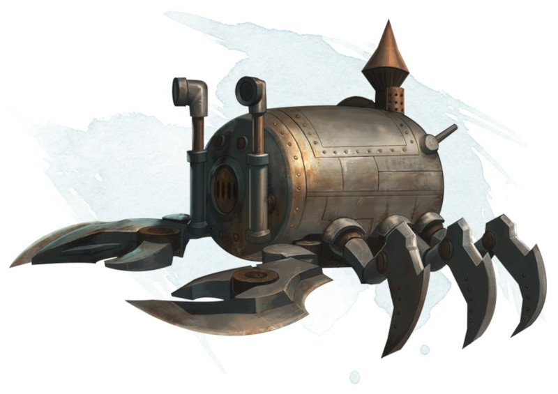

Submersible de Kwalish
Objet merveilleux, légendaire
Cet objet apparait d'abord comme un grand baril de fer étanche pesant 250 kg. Le baril a un loquet caché qui peut être trouvé sur un jet d'Intelligence (Investigation) DD 20 réussi. Relâcher le loquet déverrouille une trappe à une extrémité du fût, permettant à deux créatures de taille M ou inférieure de ramper à l'intérieur. Dix leviers sont alignés à l'autre extrémité, chacun dans une position neutre et pouvant être actionné vers le haut ou vers le bas. Quand certains leviers sont utilisés, l'appareil se transforme pour ressembler à un homard géant.
Le submersible de Kwalish est un objet de taille G avec les caractéristiques suivantes :
Classe d'Armure : 20
pv : 200
Vitesse : 9 m, nage 9 m (ou 0 m si les jambes et la queue ne sont pas déployées)
Immunité aux dégâts : poison, psychique
Pour être utilisé comme un véhicule, l'appareil nécessite un pilote. Lorsque la trappe est fermée, le compartiment est étanche à l'air et à l'eau. Il contient suffisamment d'air pour 10 heures de respiration, divisées entre les respirations des créatures embarquées.
L'appareil flotte sur l'eau, peut plonger jusqu'à une profondeur de 270 mètres. En dessous de cette profondeur, le véhicule subit 2d6 dégâts contondants par minute en raison de la pression.
Une créature dans le compartiment peut utiliser une action pour actionner un maximum de 2 leviers de l'appareil, vers le haut ou vers le bas. Après chaque utilisation, les leviers reviennent en position neutre. Chaque levier, de gauche à droite, fonctionne comme indiqué dans la table ci-dessous.
Le submersible de Kwalish est un objet de taille G avec les caractéristiques suivantes :
Classe d'Armure : 20
pv : 200
Vitesse : 9 m, nage 9 m (ou 0 m si les jambes et la queue ne sont pas déployées)
Immunité aux dégâts : poison, psychique
Pour être utilisé comme un véhicule, l'appareil nécessite un pilote. Lorsque la trappe est fermée, le compartiment est étanche à l'air et à l'eau. Il contient suffisamment d'air pour 10 heures de respiration, divisées entre les respirations des créatures embarquées.
L'appareil flotte sur l'eau, peut plonger jusqu'à une profondeur de 270 mètres. En dessous de cette profondeur, le véhicule subit 2d6 dégâts contondants par minute en raison de la pression.
Une créature dans le compartiment peut utiliser une action pour actionner un maximum de 2 leviers de l'appareil, vers le haut ou vers le bas. Après chaque utilisation, les leviers reviennent en position neutre. Chaque levier, de gauche à droite, fonctionne comme indiqué dans la table ci-dessous.
| Levier | Haut | Bas |
|---|---|---|
| 1 | Les jambes et la queue se déploient, permettant de marcher et de nager. | Les jambes et la queue se rétractent, réduisant la vitesse à 0 et rendant inefficace les bonus de vitesse. |
| 2 | Le volet des fenêtres avant s'ouvre. | Le volet des fenêtres avant se ferme. |
| 3 | Les volets des fenêtres latérales s'ouvrent (2 par côté). | Les volets des fenêtres latérales se ferment (2 par côté). |
| 4 | Deux pinces se déploient de chaque côté de la face de l'appareil. | Les pinces se rétractent. |
| 5 | Chaque pince déployée effectue l'attaque au corps à corps suivante : +8 à l'attaque, allonge 1,50 m, une cible. Dégâts : 7 (2d6) contondant. | Chaque pince déployée effectue l'attaque au corps à corps suivante : +8 à l'attaque, allonge 1,50 m, une cible. La cible est agrippée (DD 15 pour s'échapper). |
| 6 | L'appareil marche ou nage vers l'avant. | L'appareil marche ou nage vers l'arrière. |
| 7 | L'appareil tourne à gauche de 90 degrés. | L'appareil tourne à droite de 90 degrés. |
| 8 | Des luminaires en forme d'yeux émettent une lumière vive dans un rayon de 9 mètres et une lumière faible sur 9 mètres supplémentaires. | La lumière s'éteint. |
| 9 | L'appareil plonge jusqu'à 6 mètres dans un liquide. | L'appareil remonte jusqu'à 6 mètres dans un liquide. |
| 10 | La trappe arrière se descelle et s'ouvre. | La trappe arrière se ferme et se scelle. |
Dungeon Master´s Guide (SRD)
